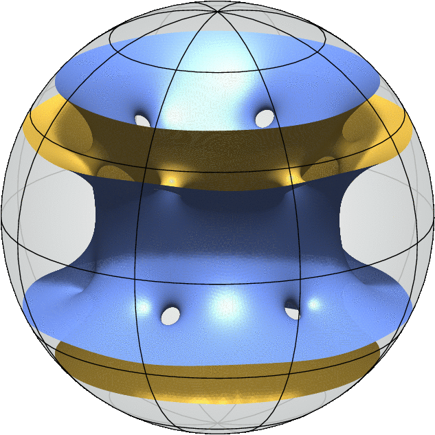
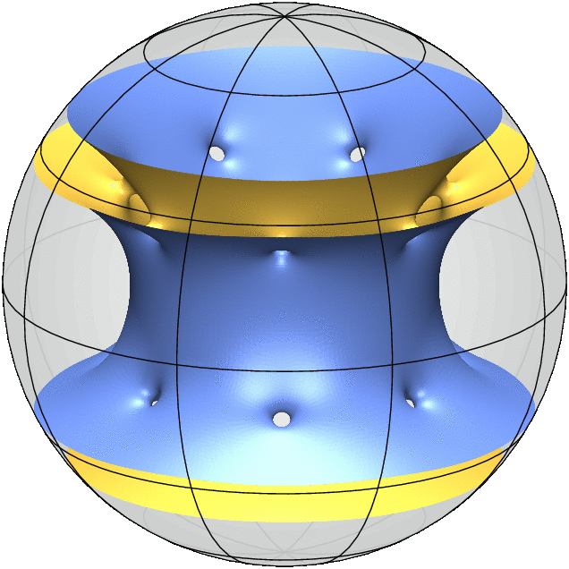

Free boundary minimal surfaces with four boundary components via doubling the critical catenoid

genus = 9

genus = 11

genus = 13
References
- N. Kapouleas and P. McGrath, Generalizing the Linearized Doubling approach, I: General theory and new minimal surfaces and self-shrinkers, preprint (arXiv:2001.04240).